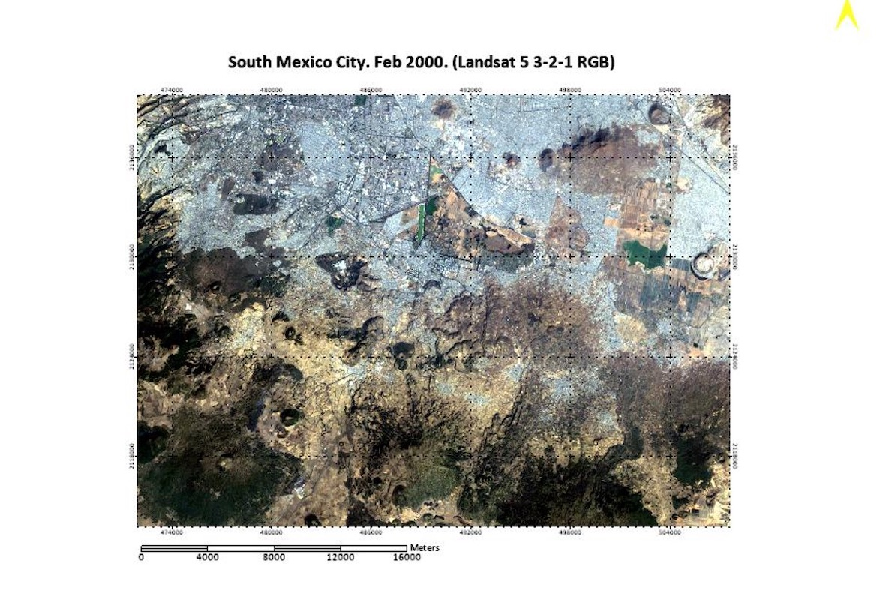

Mini Projects
Urbanization of Conservation Areas in Mexico City
In this project for a remote sensing course, I looked at land-use change in conservation zones in Mexico City between 2000 and 2020. I used LANDSAT data and ENVI and QGIS in order to classify the land area at both time extremes and then quantify the difference using Change Detection Statistics. I found that there had been significant urbanization of conservation areas, possibly due to an unaffordable hosuing crisis in the city pushing people out of the city.
Final PresentationA Simple, Interactive Energy Balance Model
A project for a scientific programming class, this interactive Jupyter Book written in python walks the user through the process of creating a simple energy balance model of the Earth. The book goes through the basic science behind energy balance models and has two major programming features. The first integrates the energy balance equation from the theortical start of the Earth to the present, letting the user decide the initial conditions to see how the Earth would evolve given a weaker sun, or a more transparent atmosphere (or any number of possibilities)! The second component generates an active signal of the current energy balance, and lets the user use a slider to see how changes in albedo, insolation, and emissivity.
Jupyter Book